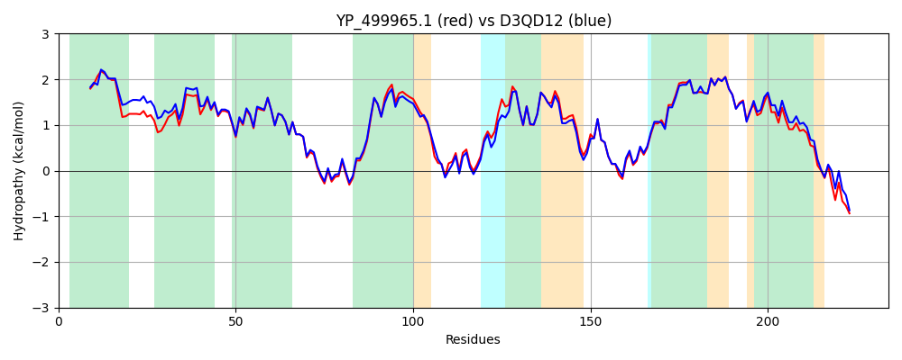

Hit Accession: D3QD12
Hit TCID: 2.A.88.8.1
Hit Description: gnl|BL_ORD_ID|3166 gnl|TC-DB|D3QD12|2.A.88.8.1 Putative preQ0 transporter OS=Staphylococcus lugdunensis (strain HKU09-01) GN=SLGD_01524 PE=4 SV=1
Mach Len: 234
e:0.000000
Query TMS Count : 7
Hit TMS Count: 7
TMS-Overlap Score: 5.900000
Predicted Substrates:CHEBI:64299;queuosine residue
BLAST Alignment:
Score: 985 , Bit scores: 384 bits, E-value: 4.0e-137, Alignment length: 234, Percentage identity: 81
Query: 1 MYNEILGLVTFIATFVLMVLMYRFFGKQGLIAWVAIGTIIANIQVIKTVEIFGISATLGNVMFASIYLATDILNDIYGRRVAKRAVWLGFSSTLIMIIVMQLSLHFIPAPEDMAQKALHAIFDVVPRIALGSIVAYIIGQHIDVFIFSLIKKVFSSDKTFFIRAYGSTFLSSIIDTALFVAIAFIGSLPGTVVFEIFITTYVLKLASTVFNVPFGYIAKSFYRKGKIDKLDQGY 234
M+NEI G +F+ TF+LMVLM+R FGKQGLI W+AIGTIIANIQVIKT+ IFGISATLGNVMFASIYLATDILNDIYGR++AKRAVWLGFSSTLIMIIVMQ+SLHFIPAPED+AQ + IF+++PRIALGSI+AYIIGQH+DVFIFS+IKK+FSSDKTF IRAYGST LSSIIDTALFVAIAFIG+LP VFEIFITTY+LKL ST+ NVPFGYIAKS YRKGKI LD+ Y
Sbjct: 1 MFNEIFGAASFLVTFILMVLMFRAFGKQGLIVWIAIGTIIANIQVIKTIHIFGISATLGNVMFASIYLATDILNDIYGRKIAKRAVWLGFSSTLIMIIVMQMSLHFIPAPEDIAQSGMETIFNLIPRIALGSIIAYIIGQHVDVFIFSMIKKIFSSDKTFIIRAYGSTALSSIIDTALFVAIAFIGTLPSMAVFEIFITTYLLKLLSTILNVPFGYIAKSMYRKGKIANLDKDY 234 | Protein Hydropathy Plots: |
|---|
| |
Pairwise Alignment-Hydropathy Plot:
|
|---|
|  |